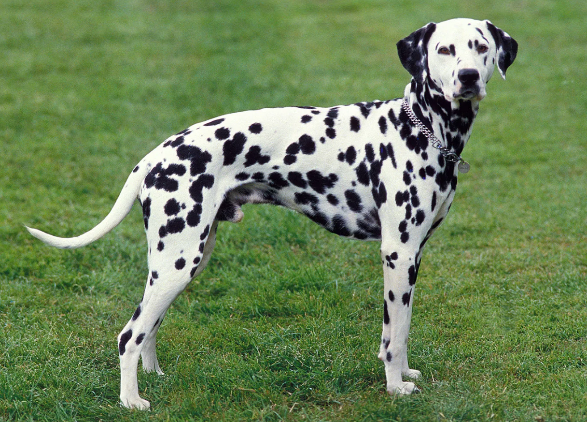

DALMATION
Weight:
45 - 60 lbs.
Height :
19 - 22 in.
21 - 23 in.
Length:
Short .
Color:
White with black spots.
Longevity:
12 – 14yrs.
Dalmatian personality
Dalmatians are highly energetic, playful and sensitive dogs. They are loyal to their family and good with children, although some Dalmatian experts caution that the breed may be too energetic for very small children.These dogs are intelligent, can be well trained and make good watchdogs.Some Dalmatians can be reserved with strangers and aggressive toward other dogs others are timid if they are not well socialized, and yet others can be high-strung. These dogs are known for having especially good memories and are said to recall any mistreatment for years.
What to expect
Dalmatians thrive on human companionship, and if left alone too long they can become destructive or they will pout and act depressed. This dog is for someone who wants to spend time with a pet.Dalmatians also need lots of exercise to dispel boundless energy. They are probably not suitable for apartment-dwellers unless the family is committed to long, daily walks or runs. The Dalmatian is more suited to living where he can romp and run.The breed has been the object of fad popularity because of movie exposure. Too often this has led to overbreeding of poor specimens, and homes that are not suited for the breed. The breed also has a high incidence of deafness, which can lead to communication problems. Too many Dalmatians end up in rescue because they do not act like the dogs in the movies.
History of the Dalmatian
When most of us see a flashy, spotted Dalmatian, we think of a firehouse mascot or the stars of Disney's “101 Dalmatians“ but the breed has a more varied, though elusive, history. No one knows for sure where the breed originated, but Dalmatians are named for Dalmatia, a coastal area that long ago was part of Austria. The dogs are thought to be descendants of the pointer. Dalmatians became popular in the 1800s, when they were used as coach dogs to trot alongside carriages and protect them and the horses from other dogs and threats. They have also been war sentinels, circus performers and hunters, as well as firehouse mascots. The Dalmatians we know today are primarily companion animals.